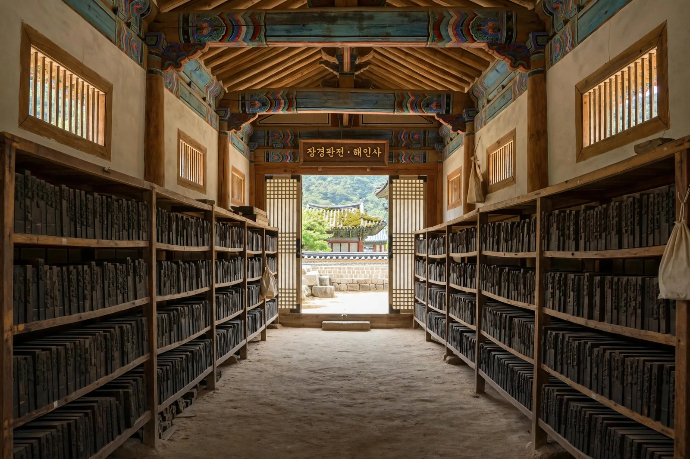

The Tripitaka Koreana (Korean: 팔만대장경, "Palman Daejanggyeong", literally "Eighty-Thousand Tripitaka") is a Korean collection of the Buddhist canon — the Tripitaka — carved onto more than 80,000 wooden printing blocks in the 13th century. It is the most complete and accurate of the surviving East Asian woodblock editions of the Buddhist scriptures, and the blocks are stored at Haeinsa Temple in South Gyeongsang Province, South Korea.
The work was commissioned by King Gojong of Goryeo. A first edition, begun in 1011 during the Khitan invasions, was destroyed by Mongol invaders in 1232. The king ordered a new edition in 1236, partly as an act of devotion intended to invoke the Buddha's protection against the Mongol invasions of Korea. Carving took about twelve to sixteen years and was completed around 1248–1251 under the editorial direction of the monk Sugi, who collated the text against other editions and corrected errors.
The collection comprises 81,258 blocks (some counts give 81,352), each about 24 cm by 70 cm, carved on both sides in Chinese characters — roughly 52 million characters in total, arranged in over 1,500 titles and 6,500 volumes. The blocks are made of birch wood, soaked and treated to resist insects and warping. Since the 1390s they have been kept at Haeinsa in the Janggyeong Panjeon, a pair of storage halls whose passive design — differently sized windows, raised floors, and charcoal and lime beneath the floor — regulates humidity and has preserved the blocks for over six centuries.
The Janggyeong Panjeon was designated a UNESCO World Heritage Site in 1995, and the Tripitaka Koreana blocks and associated texts were inscribed in UNESCO's Memory of the World register in 2007. A fully digitised edition has been produced, enabling the canon to be searched and printed without handling the originals.
See also: Goryeo · Movable type